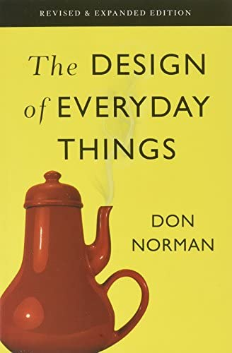
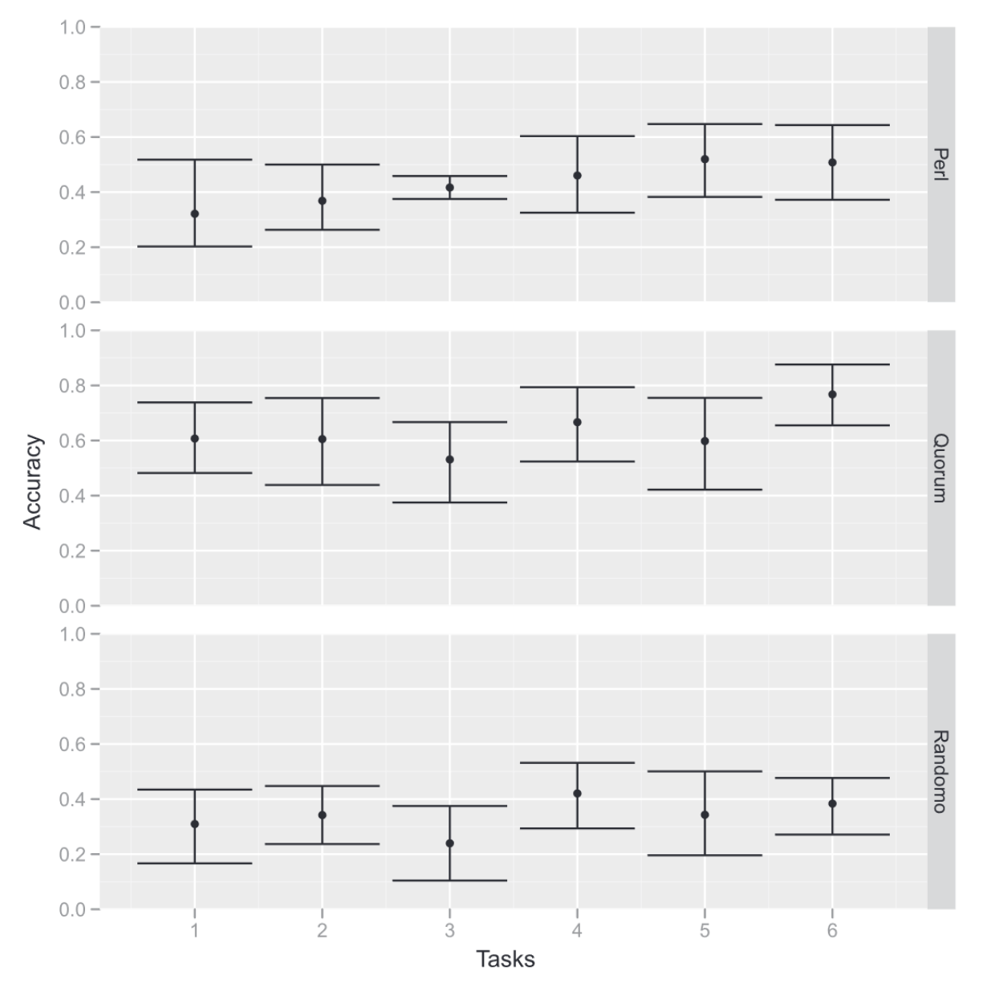
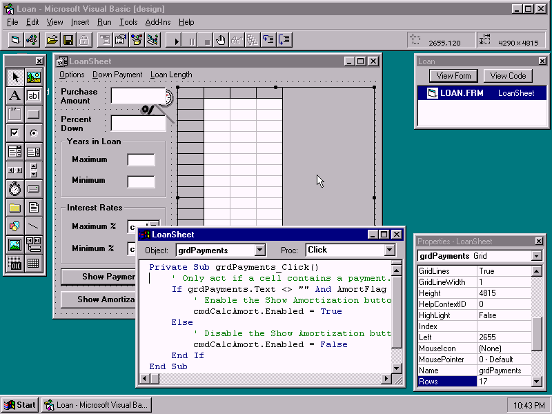
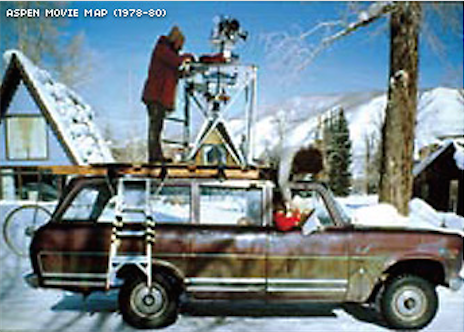
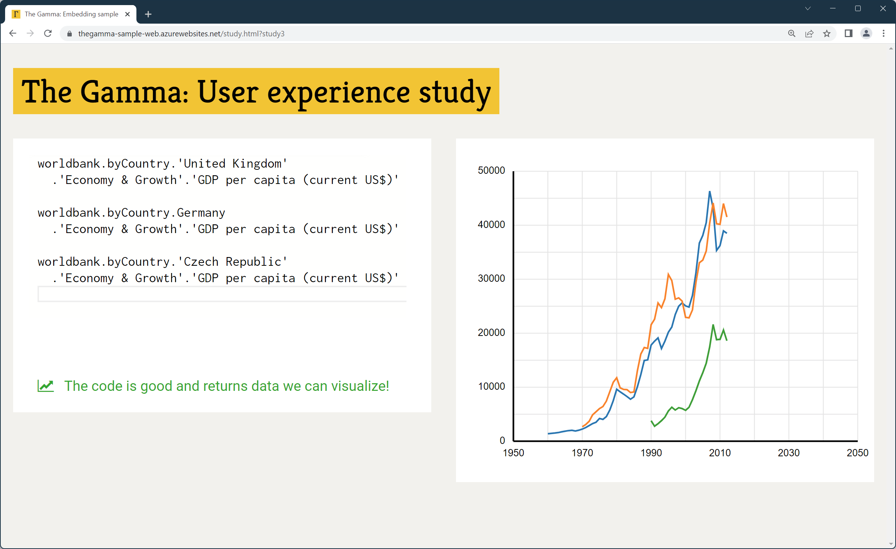
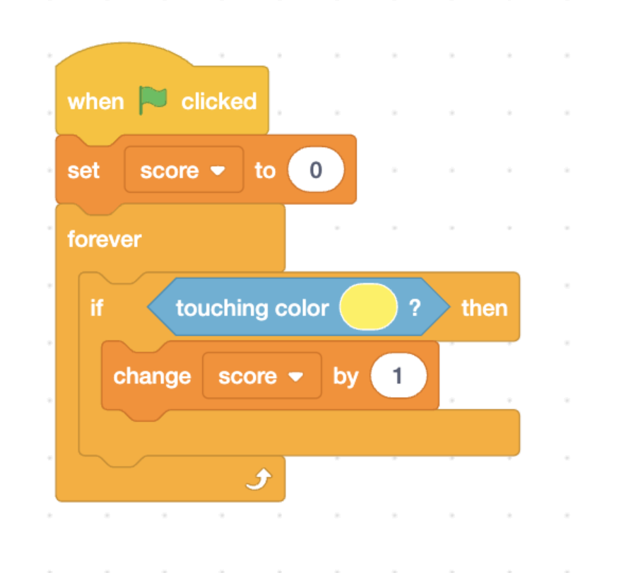
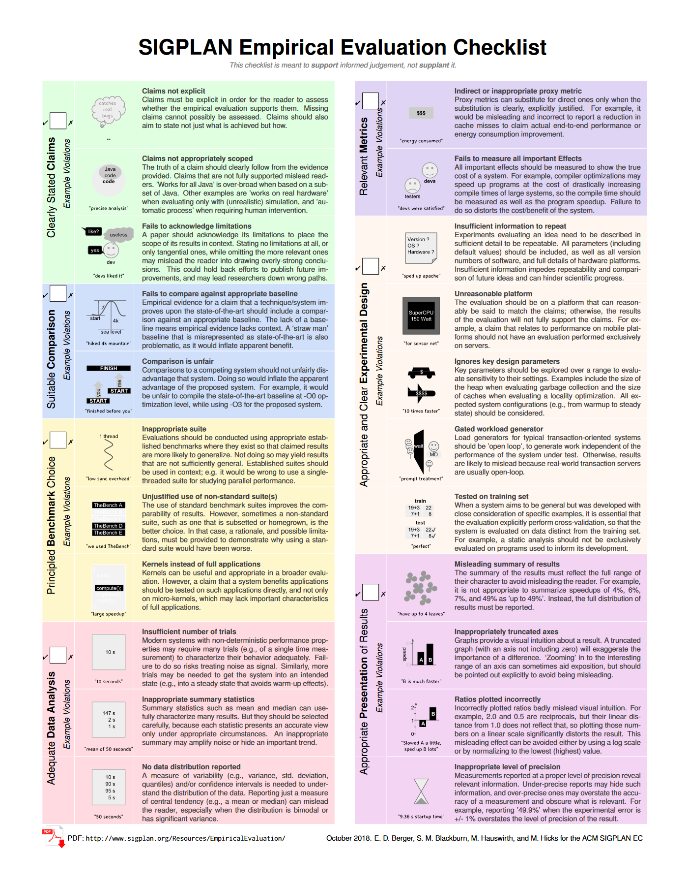

NPRG075
Human-centric language design
Tomáš Petříček, 309 (3rd floor)
petricek@d3s.mff.cuni.cz
https://tomasp.net | @tomaspetricek
Lectures: Monday 12:20, S7
https://d3s.mff.cuni.cz/teaching/nprg075

Research methods
Human-computer interaction

HCI perspective
Are programming languages user interfaces?
The means by which the user and a computer system interact (...)
Shifts focus on users
and interaction

Desktop metaphor
Created in the
1970s at Xerox
Metaphor as a
design principle
Move from solving problems to building new interfaces

Human factors
Equipment interaction incidents by trained users in World War II
Design equipment
to minimize potential for problems
Lab testing and experimental psychology
Research methods
What to study and how
- What is the most effective way of doing X?
- What mistakes programmers make and why?
- Can we solve X and Y in a unified way?
- Do systems enable new user experiences?
Methodological bias

Hierarchy in science
- Theoreticians over experimentalists
- Everyone knows Einstein's equation
- Nobody Michelson–Morley experiment
Biases in computing
- Proofs are the most fundamental!
- Can we measure something objective?
- Running a rigorous user experiment?
- All other evaluation is "too soft"!
Controlled experiments
Evidence-based language design

Evidence-based language design
For each language feature, determine
the best option experimentally
How to make user studies as rigorous
as possible?
Randomized controlled trials

Gold standard in medicine
- Compare treatments or with placebo
- Random allocation of participants
- Blinding and study pre-registration
Limitations of RCTs
- Very hard to do properly
- Answers only very limited questions
- Even this may not be rigorous enough!
Case study: Perl vs. Randomo

An Empirical Investigation into Programming Language Syntax (Steffik, Siebert, 2013)
Getting it right
Study setup
- Copy and modify code sample
- Never programmed before
- Age, gender, language balance
Statistical evaluation
- Verified manual rating of accuracy
- Mauchly's sphericity test
- Repeated-measures ANOVA test

Perl vs. Randomo
While users of Quorum were able to program statistically significantly more accurately than users of Perl (p = .047), and users of Randomo (p = .004), Perl users were not able to program significantly more accurately than Randomo users (p = .458).
Experiments
Studying languages experimentally
- Typing discipline, syntax, errors, inheritance
- Compare two structurally similar alternatives
- Study participants with similar backgrounds
- Does not help with fundamentally new designs
Empirical studies
Software repository analysis
Software repository analysis

Study existing codebases
- Lots of projects on GitHub
- Commit history, bug reports, etc.
What can we study?
- What leads to fewer bugs?
- How OSS contributors behave
- How code gets duplicated and reused?
- Code quality and code structure

Does strong
typing matter?
Large scale corpus study
"[It] appear[s] that "strong typing is modestly better than weak typing, and among functional languages, static typing is also somewhat better than dynamic typing.""

Does strong
typing matter?
Attempt to reproduce the study mostly failed
"I believe [it does] in my heart of hearts, but it's kind of an impossible experiment to run."
Repository analysis
How to and limitations
- Lots of code on GitHub is useless
- Focus on somewhat sensible projects!
- Many hidden factors to account for
- Avoid comparing apples and oranges
- Studying semantics and runtime is hard
Usability evaluation
Considered harmful

Cultural adoption
(Greenberg et al. 2008)
"Usability evaluation is appropriate for settings with well-known tasks and outcomes. They fail to consider how novel systems will evolve and be adopted by a culture over time."
Tricky to evaluate

Early designs
- Purely explorative sketches
-
Getting the right design vs.
Getting the design right
Cultural adoption
- Hard to imagine future uses
- First radio and automobiles
- Memex, Sketchpad and oNLine System
Evaluating user interface research
(Olsen, 2007)
Lively research field in the 1970s and 1980s
Ubiquitous computing challenges the classic desktop metaphor
Increasing number
of non-expert programmers!
User interfaces
New system and languages
- Reduce time to create new solutions
- Least resistance to good solutions
- Lowering skills barrier of users
- Power in common unified infrastructure
Simplifying programming
Data exploration tools

Programming for data journalists
Data transformations using various online data sources
Too hard for Excel, too complex in Python or R
Getting it right is very time-consuming!
Demo
Data exploration in The Gamma

Evaluating
The Gamma
Can non-experts actually use it?
Is it better than spreadsheets?
What desirable
design characteristics does it have?
Case study: The Gamma

Evaluating programming systems
- Programming tool for journalists
- Olsen's framework for UI systems
- tinyurl.com/nprg075-ui
Design questions
- What possible claims can we make?
- What evaluation errors to avoid?
Methods review
Evaluating programming systems

Evaluating
HCI toolkits
(Ledo et al., 2018)
Research claims made in publications about UI toolkits, etc.
The same works for languages, libraries, tools, frameworks, ...
Evaluation types
What claims can we make?
- Demonstrations - show what is possible
- Usage - study actual system use
- Performance - evaluate how well it runs
- Heuristics - expert rules of thumb
Demonstrations
Showing a novel example

Can do some-thing previously unthinkable
Replicating past examples
System makes previously very hard thing easy
Presenting case studies

Show usability of a system in a range of situations

Demo or Die!
MIT Media Lab paraphrasing of
"publish or perish".
Aspen Movie Map
The 1978 precursor of Google Street View
Demo of a radically
new technology

Varv programming system evaluation
(Borowski et al., 2022)
Makes all information visible and modifiable
Affects the whole developer workflow
Case studies to illustrate the effects
Varv evaluation

Demonstrate workflow
- Two concrete usage scenarios
- Step by step description of work
- Using personas for concreteness
Potential of the system
- Implications of the design
- Debugging, authoring, tools
- Notebooks, blocks, VS Code, etc.

Usage evaluation of The Gamma
(Petricek, 2022)
Can non-programmers really use the system?
Get non-programmers, ask them to try and watch and note!

The Gamma evaluation
13 participants from business team of a research institute
Asked to complete
1 of 4 different tasks
Evaluated using activity logging, observation and interview
Usage evaluation

Possible setup
- Complete a given task
- Observe, log & record
- A/B comparison of variants
- In the lab or in the wild
Collecting feedback
- Complete a questionnaire
- Ask to comment (Think aloud)
- Semi-structured interview afterwards

Studying usage
in the wild
Widely used to understand use of commercial systems
What language or editor features are used, performance, project profiles

Heuristics
Rules of thumb for evaluating designs
written by experts
Evaluation without direct human involvement!
Example: Match between system and the real world
Olsen's criteria for user interface systems
Heuristic evaluation
Nielsen's usability heuristics
- Characteristics of a good interface
- General usability guidelines
- Consistency, visibility of state, ...
Cognitive dimensions of notation
- Heuristics for assessing notations
- Broad-brush understandable evaluation
- Viscosity, visibility, abstraction, ...

Technical performance
Baseline or improves over state of the art
Efficiency, lines of code
Not about usability, but an easy thing to show

Technical performance
Getting it right
Claims, comparison, benchmarks, metrices, setup, presentation
See SIGPLAN Empirical Evaluation Checklist
Conclusions
Usability and evaluation

Usability evaluation
Evaluating and comparing with existing systems
Evaluating usability can inspire new designs
The danger is designing with focus just on
effective evaluability
Reading

Reactive programming
- Introduction to RxJS concepts
- Available at: https://www.learnrxjs.io/learn-rxjs/concepts/rxjs-primer
Why read this
- Widely used practical library!
- But what exactly is going on?
- Does it always behave "intuitively"?
Conclusions
Human-centric language design
- Evaluation methods from the HCI field
- Controlled experiments, empirical studies
- Demos, usage, heuristics & performance
Tomáš Petříček, 309 (3rd floor)
petricek@d3s.mff.cuni.cz
https://tomasp.net | @tomaspetricek
https://d3s.mff.cuni.cz/teaching/nprg075
References (1/2)
Methodology
- Greenberg, S. and Buxton, B. (2008) Usability Evaluation Considered Harmful (Some of the Time), CHI
- Ledo et al. (2018). Evaluation Strategies for HCI Toolkit Research
- Olsen (2007). Evaluating User Interface Systems Research. UIST
- Arnold, K. (2005). Programmers are People, Too, ACM Queue
Heuristics
- Nielsen, J. (1994). 10 Usability Heuristics for User Interface Design. Norman-Nielsen Group
- Blackwell, A., Green, T. (2002). Notational Systems – the Cognitive Dimensions of Notations framework. (Chapter)
- Berger, E. et al. (2022). SIGPLAN Empirical Evaluation Checklist. ACM SIGPLAN
Examples
- Steffik, A. et al. (2013). An Empirical Investigation into Programming Language Syntax. ACM
- Ray, B. et al. (2014) A Large Scale Study of Programming Languages and Code Quality in Github, FSE
- Berger, E. et al. (2019) On the Impact of Programming Languages on Code Quality, ACM
- Borowski, M. et al. (2022). Varv: Reprogrammable Interactive Sofware as a Declarative Data Structure. CHI
- Petricek, T. (2022). The Gamma: Programmatic Data Exploration for Non-programmers. VL/HCC
Books
- Norman, D. (1988). The Design of Everyday Things, Basic Books
- Hacking, I. (1983). Representing and Intervening, Cambridge